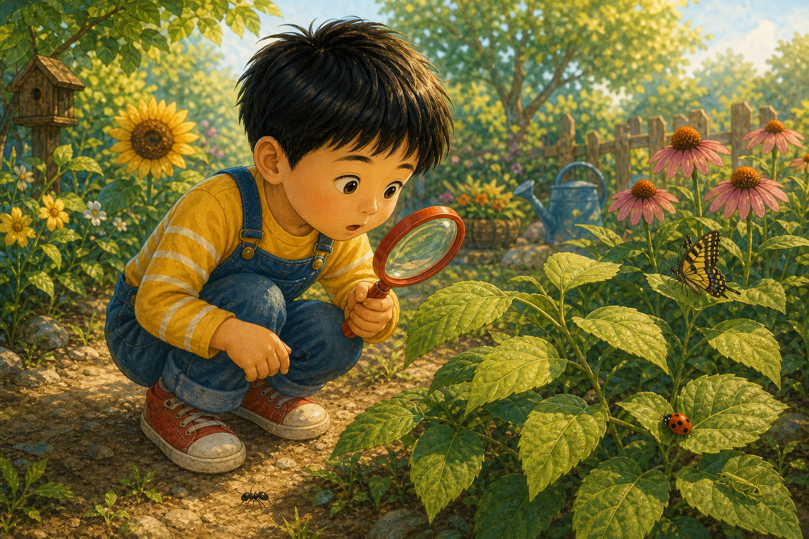
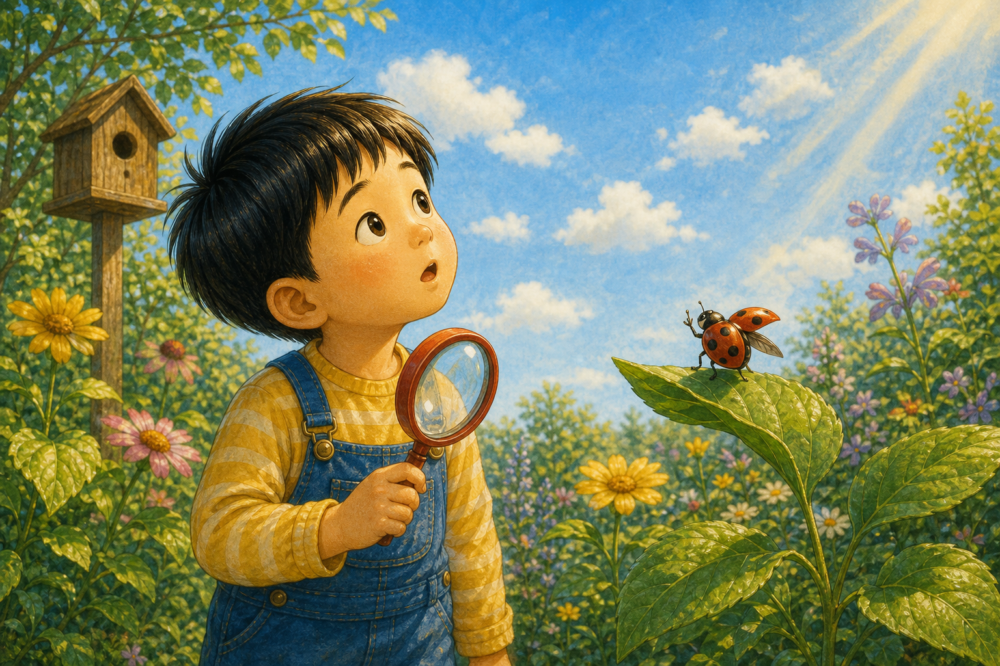
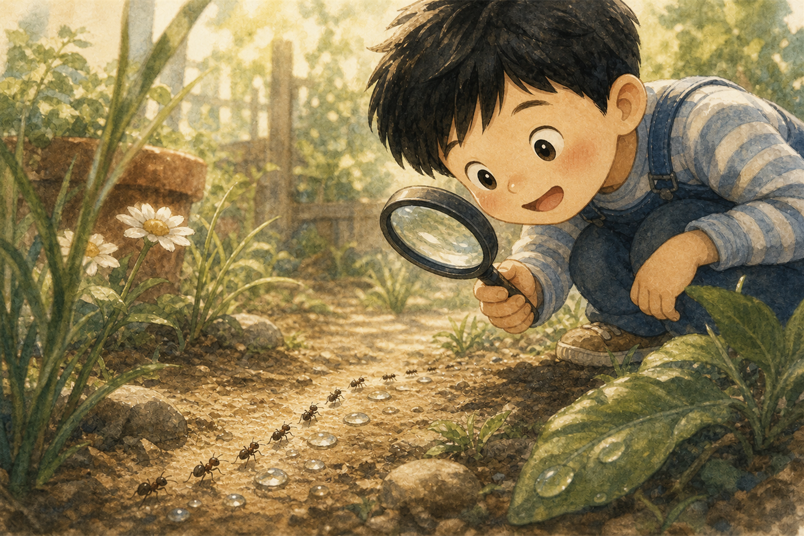
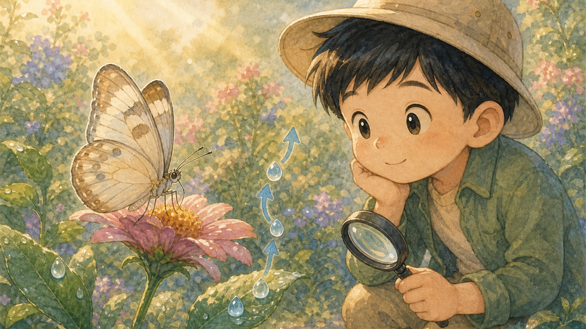
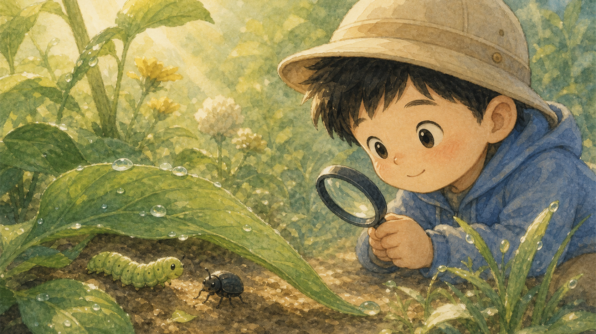
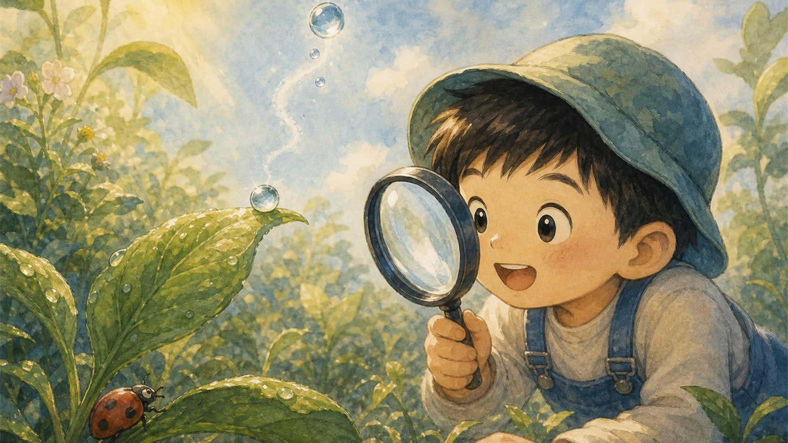
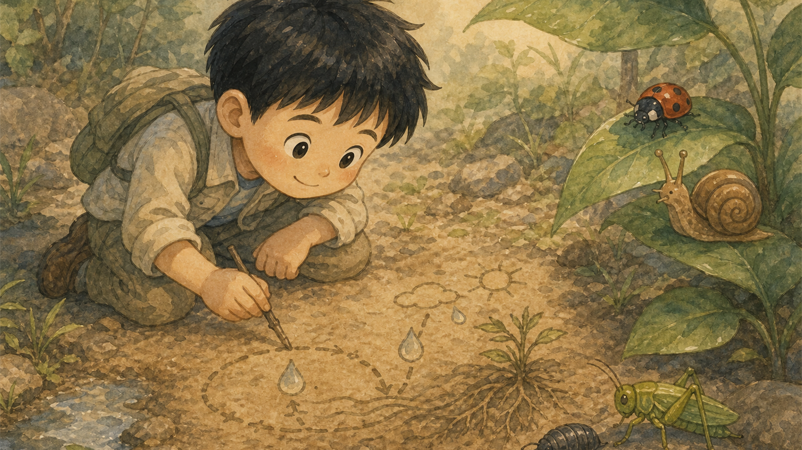
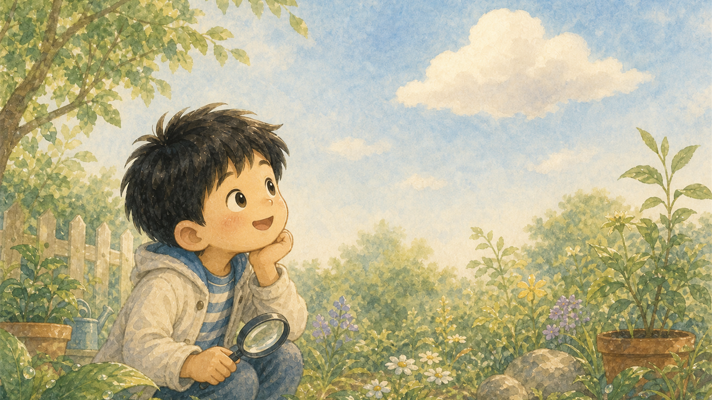
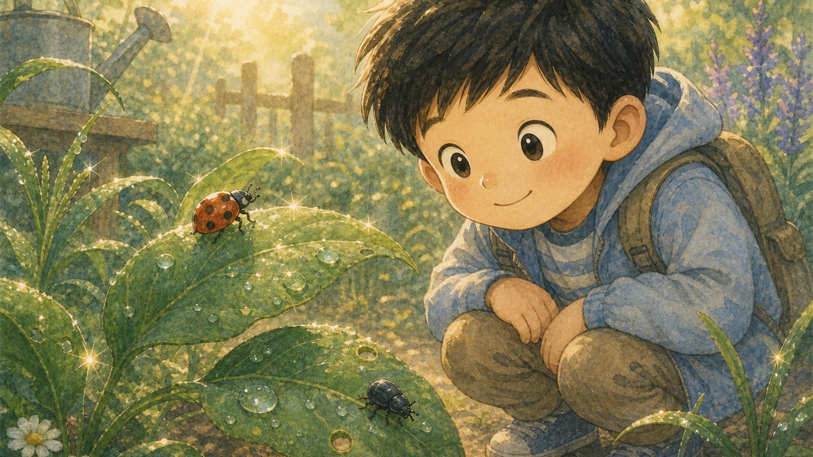
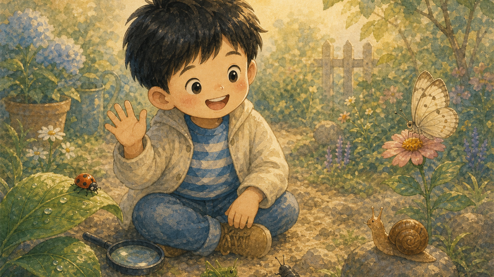

돋보기 탐정
태오는 작은 돋보기를 들고 정원으로 나갔어요. 잎사귀 위에는 반짝 이슬이 하나도 남아 있지 않았지요.
"이슬은 어디로 갔을까?"

태오는 작은 돋보기를 들고 정원으로 나갔어요. 잎사귀 위에는 반짝 이슬이 하나도 남아 있지 않았지요.
"이슬은 어디로 갔을까?"

무당벌레는 빨간 날개를 살짝 펼치며 알려 주었어요. 해님이 뜨자 이슬이 반짝이며 위로 올라갔다고요.
태오는 하늘을 올려다보며 첫 단서를 찾았어요.

개미들은 작은 물방울을 피해 줄지어 걸었어요. 태오는 곤충들이 아주 작은 변화도 잘 느낀다는 걸 알았지요.
정원에는 우리가 못 보던 길이 많았어요.

나비는 꽃 위에 앉아 말했어요. 이슬은 사라진 게 아니라 햇빛을 만나 여행을 떠난 거라고요.
태오는 고개를 끄덕이며 다음 단서를 찾았어요.

애벌레와 딱정벌레는 잎 아래에서 천천히 움직였어요. 햇빛이 따뜻해질수록 이슬은 더 작아졌지요.
태오는 자연이 조용히 변한다는 걸 보았어요.

잎 끝의 작은 물방울이 햇빛 속에서 반짝였어요. 태오는 이슬이 하늘로 올라가는 것처럼 느꼈답니다.
작은 정원도 커다란 과학 교실이었어요.

태오는 나뭇가지로 흙 위에 이슬의 여행을 그렸어요. 곤충 친구들은 잎 위에서 조용히 바라보았지요.
태오는 답을 조금씩 이해하기 시작했어요.

정원 위로 하얀 구름이 둥실 떠 있었어요. 태오는 이슬이 언젠가 비가 되어 다시 돌아올 거라고 생각했지요.
사라진 것이 아니라 여행 중인 거였어요.

다음 날 아침, 잎사귀 위에 이슬이 다시 반짝였어요. 무당벌레와 딱정벌레도 조용히 아침을 맞았답니다.
태오의 추리는 맞았어요.

태오는 돋보기를 내려놓고 작은 친구들에게 인사했어요. 이제 정원을 볼 때마다 더 천천히, 더 조심히 보기로 했지요.
곤충 탐정 태오는 자연을 아끼는 마음까지 발견했답니다.